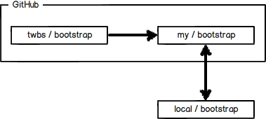

我们一直用 GitHub 作为免费的远程仓库，如果是个人的开源项目，放到 GitHub 上是完全没有问题的。其实 GitHub 还是一个开源协作社区，通过 GitHub，既可以让别人参与你的开源项目，也可以参与别人的开源项目。
在 GitHub 出现以前，开源项目开源容易，但让广大人民群众参与进来比较困难，因为要参与，就要提交代码，而给每个想提交代码的群众都开一个账号那是不现实的，因此，群众也仅限于报个 bug，即使能改掉 bug，也只能把 diff 文件用邮件发过去，很不方便。
但是在 GitHub 上，利用 Git 极其强大的克隆和分支功能，广大人民群众真正可以第一次自由参与各种开源项目了。
如何参与一个开源项目呢？比如人气极高的 bootstrap 项目，这是一个非常强大的 CSS 框架，你可以访问它的项目主页 https://github.com/twbs/bootstrap ，点 “Fork” 就在自己的账号下克隆了一个 bootstrap 仓库，然后，从自己的账号下 clone：
git clone git@github.com:michaelliao/bootstrap.git
一定要从自己的账号下 clone 仓库，这样你才能推送修改。如果从 bootstrap 的作者的仓库地址
git@github.com:twbs/bootstrap.git
克隆，因为没有权限，你将不能推送修改。
Bootstrap 的官方仓库
twbs/bootstrap
、你在 GitHub 上克隆的仓库
my/bootstrap
，以及你自己克隆到本地电脑的仓库，他们的关系就像下图显示的那样：

如果你想修复 bootstrap 的一个 bug，或者新增一个功能，立刻就可以开始干活，干完后，往自己的仓库推送。
如果你希望 bootstrap 的官方库能接受你的修改，你就可以在 GitHub 上发起一个 pull request。当然，对方是否接受你的 pull request 就不一定了。
如果你没能力修改 bootstrap，但又想要试一把 pull request，那就 Fork 一下我的仓库：
https://github.com/michaelliao/learngit
，创建一个
your-github-id.txt
的文本文件，写点自己学习 Git 的心得，然后推送一个 pull request 给我，我会视心情而定是否接受。